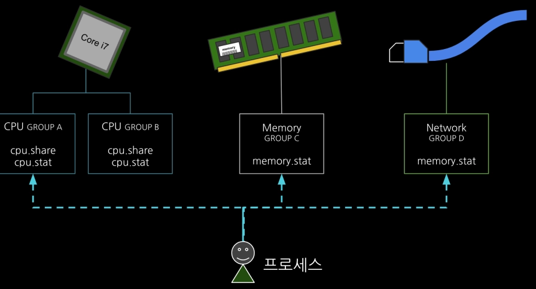
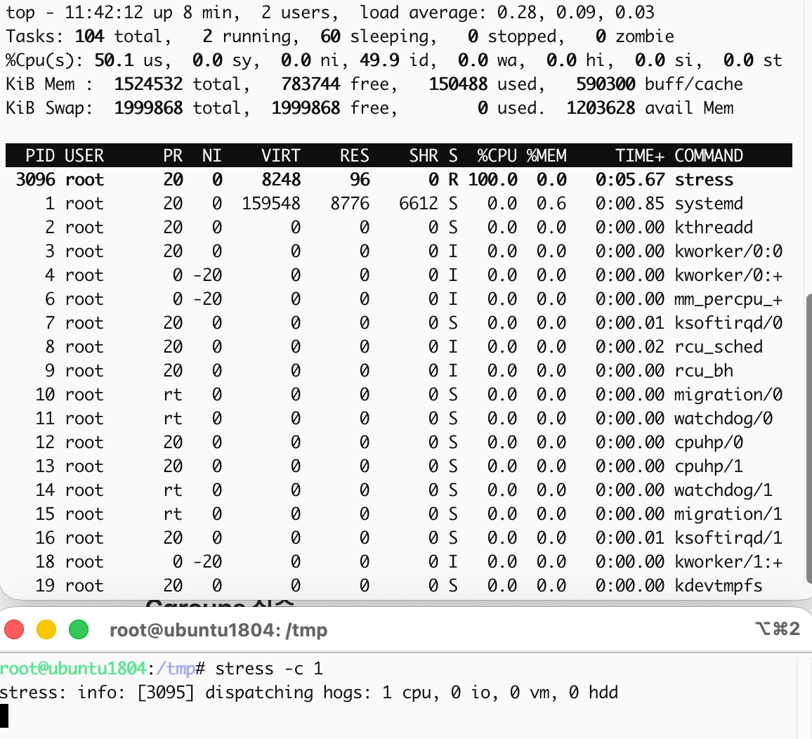
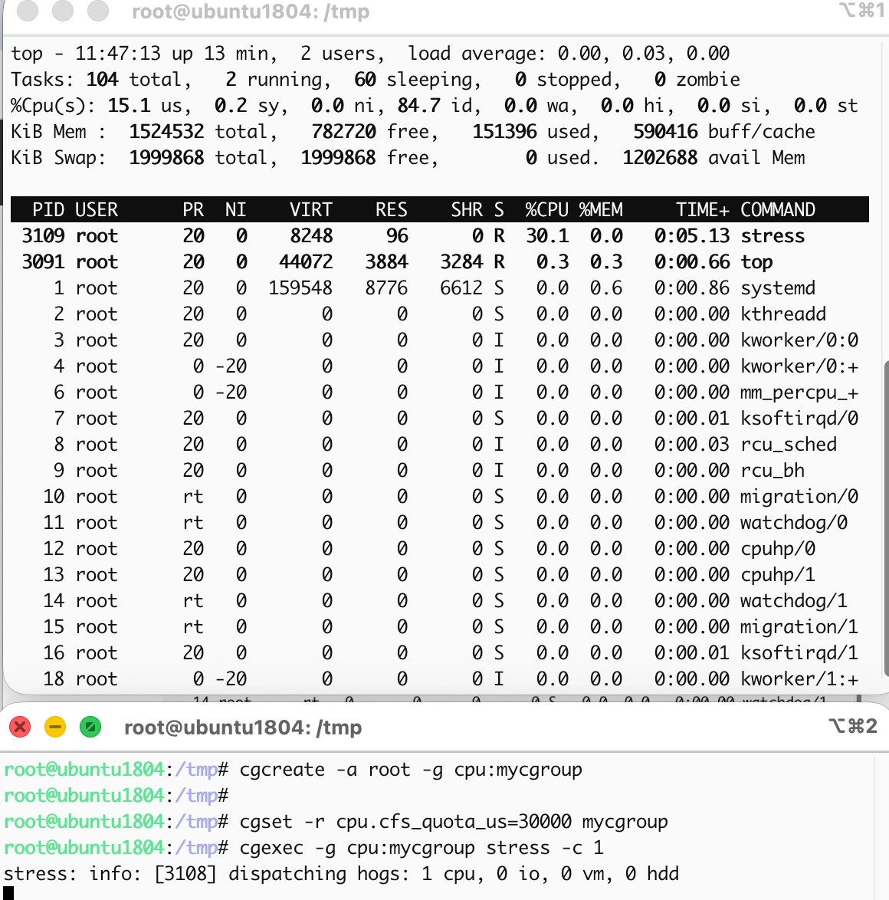

5. 컨테이너 자원¶
Cgroup의 탄생 - process containers¶
2006년 구글의 엔지니어 Paul Menage와 Rohit Seth는 그들이 직면한 문제를 해결하기 위해 "process containers"1라는 프로젝트를 시작합니다.
당시 구글은 거대한 데이터 센터를 효율적으로 운영하기 위해, 하나의 대형 서버 안에서 검색 엔진, 광고 시스템, 내부 분석 툴 등 수많은 프로세스를 동시에 돌려야 했습니다.
당시엔 프로세스 간 자원을 구별없이 공유하고 있었기 때문에, 실시간 검색과 같은 중요한 서비스가 배치 분석 작업과 같이 덜 중요한 서비스 때문에 느려지고 있었습니다.
따라서 이들은 프로세스 별로 자원을 사용할 수 있는 "Limit"을 제어할 수 있는 장치를 만들기로 했습니다. 이를 통해 서비스의 중요도에 따라 프로세스 그룹을 만들고 그룹 단위로 사용량을 묶어서 제한하고 감시하고자 했습니다.
바로 이 "process containers"란 프로젝트가 2007년 "cgroup(Control Groups)"2라는 이름으로 변경되었고 2008년 리눅스 커널에 공식적으로 포함되었습니다.
정리하면 cgroup은 하나의 리눅스 시스템 안에서 특정 프로세스 무리가 전체 시스템을 마비시키지 못하도록 자원의 벽을 치고 관리하자는 목표 하에 탄생한 것입니다.
Cgroup이 자원을 제어하는 방법¶

cgroup은 시스템의 자원(CPU, 메모리 등)을 독립된 울타리로 나누어 관리합니다. 특히 이러한 관리는 리눅스 파일 시스템(/sys/fs/cgroup)을 통해 이루어집니다. 개발자가 복잡한 시스템 콜 코딩을 하지 않아도, 시스템 관리자가 터미널에서 폴더를 만들고(mkdir), 파일에 글을 쓰는(echo)것만으로도 자원이 제어됩니다.
cgroup을 통해 자원이 제어하는 핵심은 바로 커널 호출 흐름에 심어놓은 검문소(Hook)입니다.
위에서 말한대로 /sys/fs/cgroup에 프로세스 자원 제한을 설정해두면, 커널은 프로세스가 자원을 요청할 때마다 잠시 멈춰 세우고 "너 어느 그룹 소속이야? 그 그룹 지금 한도 남았어?"라고 확인하는 과정을 매번 수행하는 것입니다. 이를 크게 "관찰"과 "제어"라는 두 가지 메커니즘으로 나누어 설명할 수 있습니다.
관찰: 프로세스에 꼬리표 달기¶
커널은 프로세스를 관리할 때 task_struct라는 구조체를 사용합니다. cgroup은 이 task_struct에 "나는 이 그룹 소속이야"라는 포인터(꼬리표)를 하나 박아두는 것에서 시작합니다.
-
커널 내부에는 css_set(Cgroup Subsystem Set)이라는 구조체가 있습니다. 모든 프로세스는 실행되는 동안 자신의
task_struct안에css_set을 가리키는 포인터를 가집니다. -
프로세스가 메모리를 새로 하당 요청하거나, CPU를 쓰려고 스케줄러에 들어올 때, 커널은 이 포인터를 조회합니다. 이를 통해 어떤 그룹에 속한 프로세스인지 커널이 확인할 수 있습니다.
제어: 커널의 검문소(Hook)¶
자원을 제어한다는 것은 결국 자원 요청을 "거절"하거나, 속도를 "늦추거나", "뺐는" 행위입니다. 커널은 코드 곳곳에 이 로직을 심어두었습니다.
CPU 제어: 스케줄러의 타임 슬라이스 가로채기¶
CPU 제어는 CFS(Completely Fair Scheduler)라는 커널 스케줄러와 연동됩니다.
-
커널은 각 그룹마다 quota라는 예산을 줍니다.
-
프로세스가 CPU를 쓰려고 할 때, 스케줄러는 "이 프로세스 그룹의 잔여 예산이 있는가?"를 먼저 확인합니다.
-
만약 예산이 0이라면, 스케줄러는 그 프로세스를 실행 대기열에서 강제로 제외하고, 예산이 다시 충전된느 주기까지 잠재워 버립니다.
메모리 제어: Page Fault의 검문¶
메모리 제어는 훨씬 빡빡합니다. 메모리는 CPU처럼 '잠시 대기'로 해결되지 않기 때문입니다.
-
일반적으로 프로세스가 메모리를 더 요청하면, 커널은 물리 메모리 페이지를 할당하는
alloc_pages함수를 호출합니다. -
cgroup이 활성화되어 있다면, 이 함수가 실행되기 직전에 "이 그룹의 현재 메모리 사용량이 한도를 넘었는가?"를 확인하는 로직이 들어 있습니다.
-
한도를 넘었다면, 커널은 일단 1차로 그 프로세스가 사용 중인 불필요한 페이지 캐시를 강제로 뺏어옵니다. 그래도 안되면 2차로 해당 그룹의 프로세스 중 하나를 골라 강제 종료(OOM Kill)시킵니다.
Cgroup v1에서 v2까지¶
Cgroup 실습¶
어떤 제한도 없이 호스트에서 stress 명령어로 CPU를 사용하면 전체 호스트의 100%까지 점유하는 것을 확인할 수 있습니다.

cgcreate, cgset 명령어를 통해 /sys/fs/cgroup 위치에 cgroup 설정을 아래와 같이 진행해줍니다. 기본적으로 리눅스 CPU 스케줄러는 cpu.cfs_period_us(기본값 100,000 마이크로초)라는 주기 동안 프로세스가 얼마나 CPU를 쓸지 결정합니다.
cpu.cfs_quota_us=30000으로 설정해주면 CPU 사용이 30%로 제한됩니다.
cgcreate -a root -g cpu:mycgroup
cgset -r cpu.cfs_quota_us=30000 mycgroup
cgexec -g cpu:mycgroup stress -c 1
